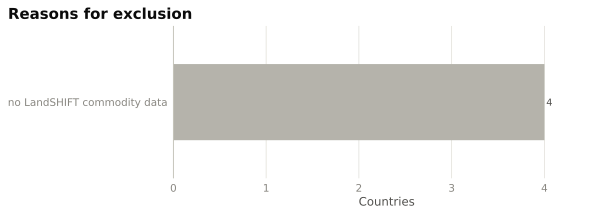
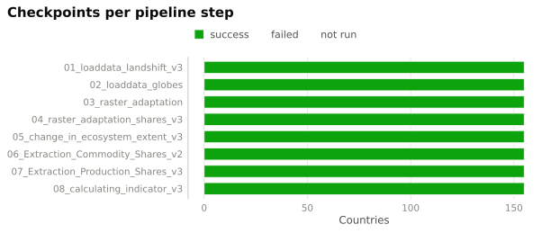
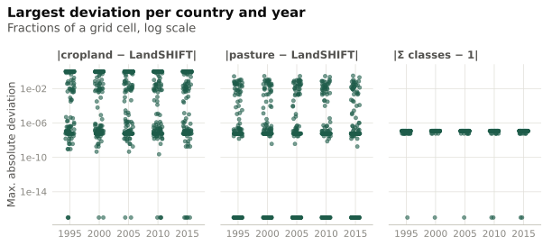
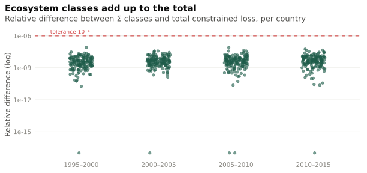

Data & checks
Coverage of the analysis and consistency checks per country
155
country folders with pipeline output
155
with v3 results
151
valid for analysis
used on all result pages
2026-10-26 14:34 CET
data built
Validity rules
A country is used on the result pages if all of the following hold:
| Check | Rule |
|---|---|
| Output present | BF-NEE summary for all 4 periods |
| Pipeline v3 | summary contains the v3 columns (cropland / pasture split) |
| Scale | LandSHIFT cell area ≤ 1,000 km² (old outputs were in m²) |
| Commodity data | LandSHIFT crop areas available (commodity shares not all missing) |
| Class split | ecosystem-class losses add up to the constrained total (rel. error < 10⁻⁶) |
| Constraint | constrained loss ≤ unconstrained loss in every period |
| Land-use split | BF-NEE of cropland + pasture = total BF-NEE |
| GlobES coupling | adjusted GlobES composition sums to 1 in every cell (step 04) |
Countries not used

Pipeline status
Latest checkpoint of every step and country (Pipeline_Status).

GlobES–LandSHIFT coupling (step 04)
After the coupling every cell must sum to one, the GlobES cropland classes must equal LandSHIFT cropland, and 14.2 must equal LandSHIFT intensive pasture. Small pasture differences occur only where LandSHIFT cropland + pasture exceed the cell and are scaled down. Cells without any GlobES cover (sum 0) are set to NA in step 05 and ignored here.

Consistency of the valid countries
